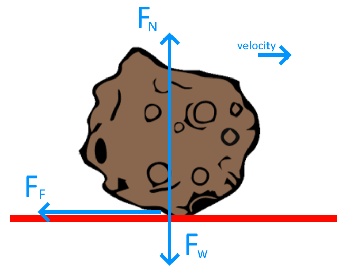

A {{ mass }} kg meteor from space enters the atmosphere and crashes into earth. Just before it touches down, it is traveling at a horizontal velocity {{ initialVelocity}}m/s. When it crashes into the ground, it does so at an angle that it slides a distance (assume the ground is flat).
Note: If you cant do one question, use the number 1 as an answer to continue as if that was the answer! The program does error carried forward :)
The best way to start these problems is always with a free body diagram so we have all the info we need in one place.

Note for this free body diagram a few important points:
All the arrows are labelled with the type of force (shorthand in this case).
All the arrows are physically touching the object to show they act on the object
The velocity arrow is separate to the object, but shows it is moving, and the direction it is moving
If the kinetic friction coefficient μ = {{ kineticFriction }}, calculate the friction on the meteor as it slides across the ground.
To start with we need to determine what equation we will solve...
$$Weight = mass * gravitational acceleration$$
$$Normal Force = Weight Force$$
Assuming the object stays on the ground and doesnt either dig in or fly off!
$$Force of Friction = Coefficient of Kinetic Friction * Normal Force$$
Kinetic friction as it is moving with respect to the ground
In this case we know the force causing the meteor to stop, its friction. So what we can do is calculate the net force on the object, and from that calculate the acceleration...